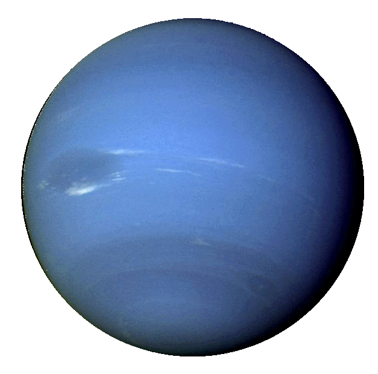

PLANETA NETUNO
Escuro, frio e chicoteado por ventos supersônicos, o gigante de gelo Netuno é o oitavo e mais distante
planeta do nosso sistema solar.Mais de 30 vezes mais longe do Sol do que a Terra, Netuno é o único planeta
do nosso sistema solar não visível a olho nu e o primeiro previsto pela matemática antes de sua descoberta.
Em 2011, Netuno completou sua primeira órbita de 165 anos desde sua descoberta em 1846.
AVoyager 2da NASA é a única espaçonave a ter visitado Netuno de perto. Ele passou voando em 1989 em seu
caminho para fora do sistema solar.
Distancia do sol: 2,8 bilhões de milhas (4,5 bilhões de quilômetros).
Diâmetro: 49.528km
Temperaturas: -220 °C, o apelido de “gigante gelado” não é exagero.